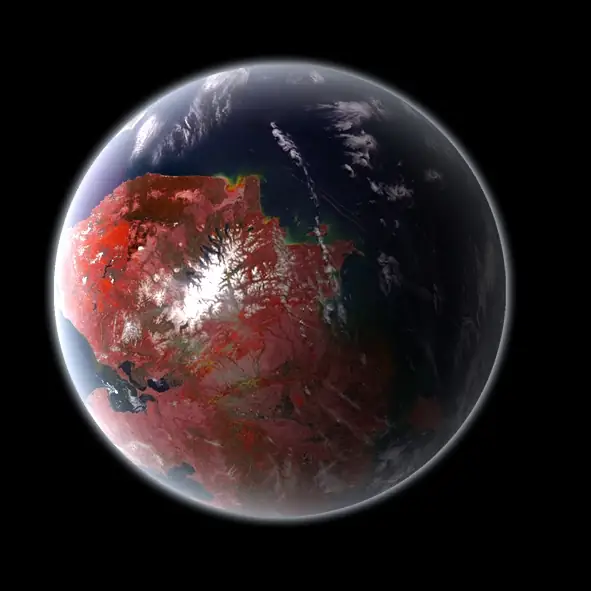

Kepler-442 b — Exoplaneta

Introdução e História
Kepler-442 b é um exoplaneta classificado como uma super-Terra, descoberto em 2015 pela missão Kepler da NASA usando o método de trânsito, que detecta pequenos eclipses de luz quando o planeta passa à frente de sua estrela.
Ele orbita a estrela Kepler-442, uma anã laranja (tipo K) localizada na constelação da Lira, a cerca de 1.120 anos-luz da Terra.
Características Físicas: Massa, Tamanho e Órbita
Kepler-442 b tem um raio de cerca de 1,34 vezes o da Terra, sugerindo uma composição predominantemente rochosa.
Ele orbita sua estrela a aproximadamente 0,41 UA de distância e completa uma volta em cerca de 112,3 dias terrestres, numa órbita com baixa excentricidade.
A massa estimada está em torno de 2,3–2,4 massas terrestres, compatível com um mundo maior e mais denso que a Terra, mas ainda rochoso.
Potencial de Habitabilidade
- 💧 Zona Habitável: Kepler-442 b está localizado dentro da zona habitável de sua estrela, onde a energia recebida poderia permitir água líquida na superfície, dependendo da atmosfera.
- 🌍 Similaridade com a Terra: Comparações de habitabilidade sugerem que ele é um dos candidatos mais promissores fora do Sistema Solar em termos de tamanho e temperatura.
- ❓ Atmosfera Desconhecida: Não há medições diretas de atmosfera ainda, então sua verdadeira condição de superfície permanece incerta.
Mesmo assim, Kepler-442 b é considerado um dos exoplanetas rochosos mais interessantes encontrados dentro da zona habitável, sendo frequentemente citado em estudos sobre mundos potencialmente habitáveis.
Curiosidades
Apesar de sua distância de mais de mil anos-luz, estudos mostram que Kepler-442 b pode ter um índice de habitabilidade comparável ou até ligeiramente superior ao da Terra em alguns modelos científicos.
Devido à natureza estável de sua estrela do tipo K, o sistema pode oferecer um longo tempo estável para possíveis processos químicos complexos.
Como muitos exoplanetas, não há imagens reais do planeta — todas as representações são artísticas baseadas em modelos científicos.
Origem do Nome
O nome “Kepler-442 b” segue a convenção científica: o nome da estrela hospedeira (Kepler-442) seguido de uma letra (“b”) que indica o primeiro planeta descoberto naquele sistema. Não há mitologia associada, pois é uma nomenclatura astronômica padrão.
Referências
- NASA. Kepler-442 b – Exoplanet Exploration / NASA Science. Disponível em: https://science.nasa.gov/exoplanet-catalog/kepler-442-b/. Acesso em: 26 dez. 2025.
- Wikipedia. Kepler-442b. Disponível em: https://pt.wikipedia.org/wiki/Kepler-442b. Acesso em: 26 dez. 2025.